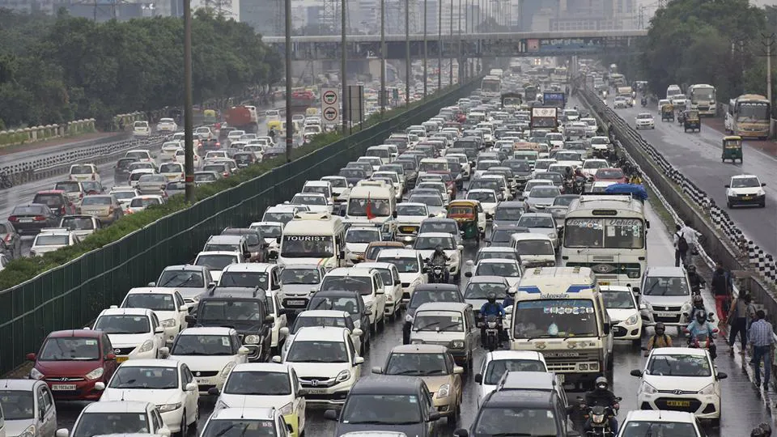

الظاهرة
«تأثير زحمة » هو التباطؤ في تدفق حركة المرور الكثيفة على الطريق بين مركزين حضريين كبيرين. هذه ظاهرة غريبة من الحركة بشكل خاص وخاصة الطرق السريعة. فمن الملاحظ حدوث تباطؤ تدريجي على أساس منتظم بين جهتين. في رحلة نموذجية من 200 كم من الممكن أن يبدو أن كل شيء يسير على ما يرام وفجأة يتكون تباطؤ سريع أو بطيء، والتي يمكن ان تسبب في الاغلاق الكامل لاتجاهات الطرق السريعة. ثم تبدأ تدريجيا جميع المركبات للتعجيل بالسرعة. وفي بعض الأحيان يصبح تدفق حركة المرور لايتجاوز أكثر من 70 كيلومترا إلى الانتعاش بعد التوقف التام. بعض السائقين يحاولون استعادة سرعات المركبات أسرع من غيرهم، وبالتالي فإنها تسبب الانكماش من جديد، حتى التوقف النهائي وفي كثير من الأحيان أقل من 5 كم من الأولى.
قد تحدث هذه الظاهرة توقف كامل للمركبات أكثر من مرة قبل وصولها إلى وجهتها، ومن هنا جاءت تسميته من تأثير جنزرة. ونتيجة لهذا تكون رحلة أطول حيث يتطلب زيادة من 20-30 دقيقة لعبور مسار 250 كم بالإضافة للتعب المتعلق بالتركيزأكثر من المعتاد أو اللازم. وتحدث ظاهرة أخرى مشابهة إلى حد ما أيضا في المناطق الحضرية خلال ساعات الذروة، ويطلق عليه تأثير الأكورديون، وهو عادة ظرفية وغير متكررة.
«تأثير الأكورديون» هو تباطؤ في تدفق حركة المرور الكثيفة على الطرق الحضرية. وكثيرا ما لوحظ خلال ساعات الذروة. على عكس تأثير جنزرة يحدث فقط في الرحلات القصيرة في المناطق الحضرية. وكثيرا ما يستخدم هذا المصطلح من قبل مُدَوِِّنو ْوَقَائِع حركة المرور من المراكز الرئيسية.

النتائج
تأخر الموظفين والعاملين عن أعمالهم وتأخر الطلاب عن دروسهم ومدارسهم وكذلك كثرة الحوادث في هذه الطرق المزدحمة
الأسباب
عموما لعدة عقود عدد ومدى التكدس المروري يتزايد، ولا سيما في البلدان النامية.
الأسباب كثيرة، أهمها
الزيادة في حركة المرور للسيارات (التي هي نتيجة حتمية لزيادة عدد السكان عدد السيارات والمعدات).
سوء حالة البنية التحتية يؤدي لحالة الاحتقان
عدم وجود اعلام مسبق لمستخدمي الطريق بحالة حركة المرور (مما يقلل الزحام بفضل معلومات عن حركة المرور في الوقت الحقيقي).
ان تقسيم سلطات إدارة حركة المرور في عدة إدارات (الأشغال العمومية، البلدية، الأمن، النقل...) في بعض المناطق يصبح غير فعال في بعض الأحيان،
أسلوب القيادة العدوانية قد يكون من عوامل خلق الزحام.
استخدام النقل الفردي بدلا من النقل الجماعي
حلول مقترحة للتقليل من مشكلة الازدحام المروري
توجد العديد من الطرق لمكافحة الاختناقات المرورية، فإنه يمكن سرد ما يلي:
تحسين تدفق حركة المرور، وخاصة تأشير أفضل للطريق
تنظيم الاستخدام عن طريق الاتاوات (رسوم البنية التحتية أو رسوم الازدحام)
ضبط السرعة (جزء من تحسين تدفق حركة المرور)
إدخال نظام النقل الذكي
الوقاية من الحوادث
تحسين وتعزيز وسائل النقل العام
تشجيع الاستخدام الجماعي للسيارات للتنقل من وإلى مكان العمل
إنشاء الطرق الجديدة (الأمر الذي قد يجعل ذلك فقط نقل للمشكلة المنبع و / أو المصب).
تحسين وتعزيز وسائل النقل العام
تشجيع استخدام الجماعي السيارات للتنقل إلى مكان العمل
استعادة الخدمات والوظائف والمحلات التجارية، والمساحات الخضراء المجاورة، للحد من الحاجة إلى السفر بمحركات.
تشجيع ركوب الدراجات، مع إنشاء مسارات الدراجة، ونقاط التعليق، الخ.
مراجعة جداول عمل المكاتب والشركات
تجنب السفر في الطقس العاصف
الوقاية
الزحمة المرورية هي نتيجة انخفاض في تدفق حركة المرور. الانخفاض في تدفق يمكن أن يكون له مجموعة متنوعة من الأسباب «الخارجية» للمركبة. ويأتي هذا الانخفاض في بعض الأحيان بسبب سائق قرر تخفيض سرعة السيارة (مما يؤدى إلى الحد من التدفق). القيادة القريبة جدا من السيارة التي تسبقنا يمكن أن تسبب تخفيضا طوعيا لدينا في السرعة لأن السائق على بينة من صعوبة الرد إذا كان هناك شيء غير متوقع، الذي يسبب حدوث انخفاض في سرعة غير طوعي.
وبالمثل، فرؤية اشتعال الاضواء الخلفية بغرض التوقف أمام سيارته غالبا ما يولد استعمال فرامله الخاصة وهلم جرا مع السيارة التي وراءنا، ومع جميع الآخرين...في حالة أن المركبات تسير متقاربة: المطلوب الكبح فوري من اجل عدم الدخول في السيارة التي امامنا
الخيارات الرئيسية لتفادي الازدحام من دون سبب «خارجي» (حادث...) هي:
القيادة بسرعة ثابتة قدر الإمكان (لتجنب إرسال إشارات الكبح المتكرر التي تتبعنا المركبات)
الحفاظ على مسافة رد فعل كافية بين سيارتنا والتي تسبقنا دون ان ترغمنا على الكبح (وهذه مسافة تمكن تقليل استعمال الكبح وخاصة الكبح الفوري.
تقليل عدد تغييرات المسارات غير الضرورية لضمان أن السيارة التي تسبقنا بعيدة بما فيه الكفاية لتجنب اجبارها على التوقف بسبب هذه التغييرات في المسارات